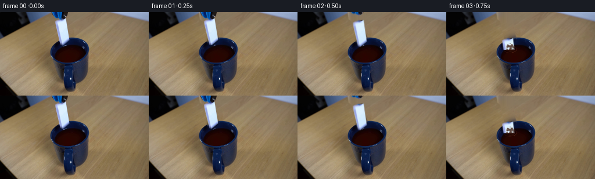
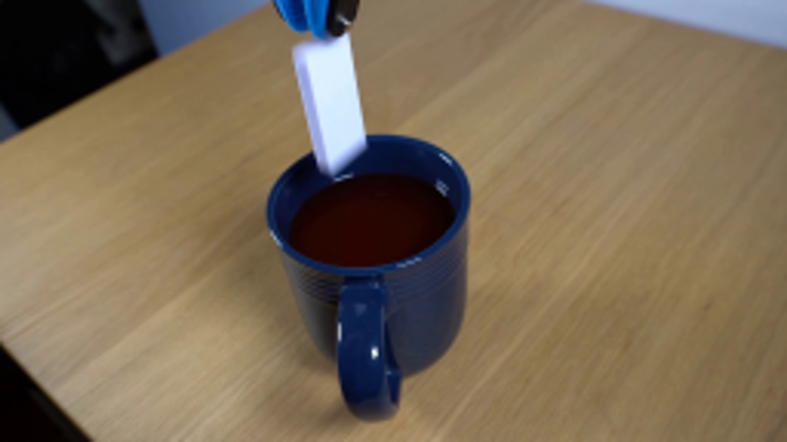
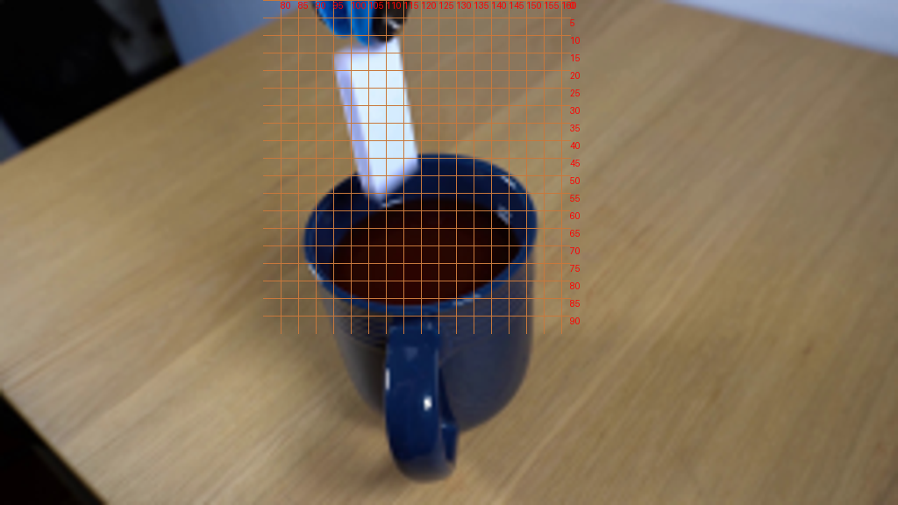
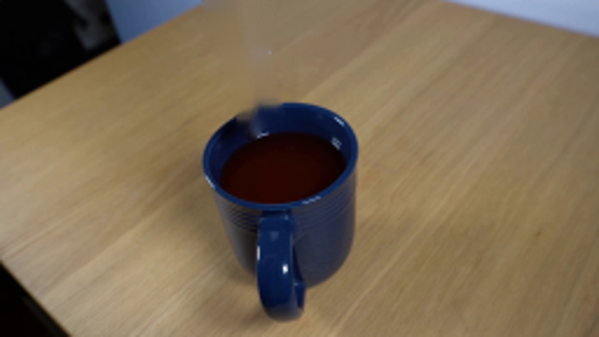
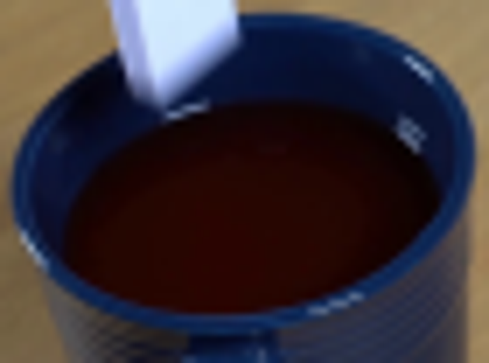
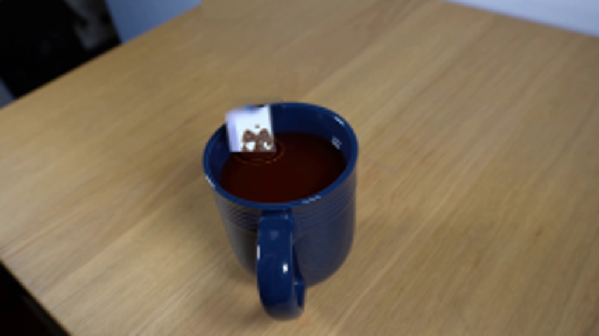
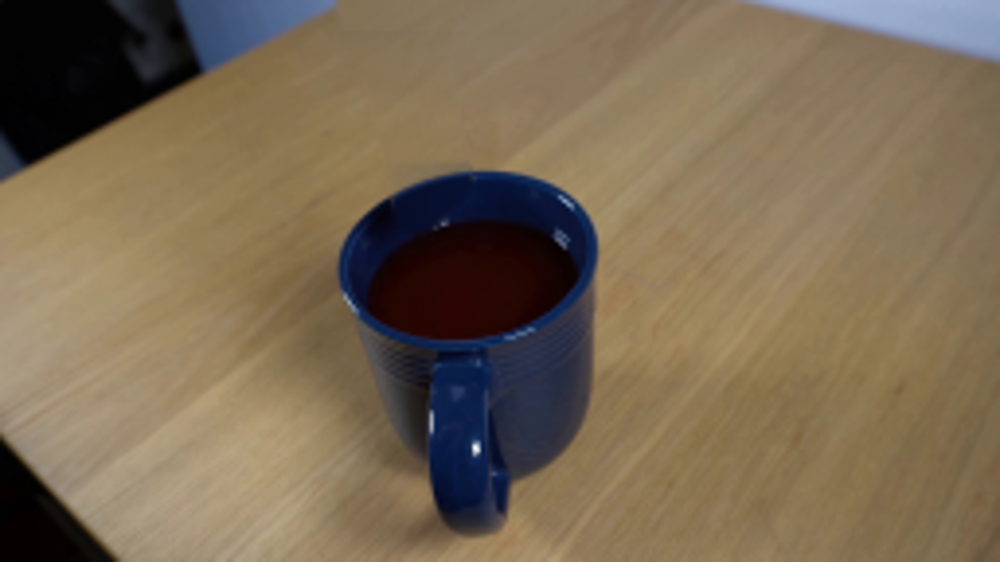

CODING AGENTS AS PIXEL WORLD MODELS
traex/GPT-6.1-Sol · 0048
点击播放 · 原生 RGB 像素
逐轮保存的候选
回放视频、检查图与代码变化。
每份候选均可单独播放。实际图片检查记录在下方工具轨迹中。
候选 01播放与检查图
点击播放 · 原生 RGB 像素


展开代码变化
--- 上一保存版本
+++ 本次保存版本
@@ -0,0 +1,188 @@
+from pathlib import Path
+import math
+import numpy as np
+from PIL import Image, ImageDraw, ImageFilter
+import cv2
+from scipy.ndimage import gaussian_filter, map_coordinates
+import artifact_io
+
+ROOT = Path(__file__).resolve().parent
+W,H=256,144
+S=4
+original=np.array(Image.open(ROOT/'first_frame.png').convert('RGB'))
+yy,xx=np.mgrid[:H,:W].astype(float)
+
+def polygon(points, blur=0):
+ im=Image.new('L',(W*S,H*S))
+ ImageDraw.Draw(im).polygon([(int(x*S),int(y*S)) for x,y in points],fill=255)
+ if blur: im=im.filter(ImageFilter.GaussianBlur(blur*S))
+ return np.asarray(im.resize((W,H),Image.Resampling.LANCZOS)).astype(float)/255
+
+def ellipse_coordinate(x,y,cx,cy,rx,ry,angle):
+ ca,sa=np.cos(angle),np.sin(angle)
+ dx=x-cx;dy=y-cy
+ u=(dx*ca+dy*sa)/rx
+ v=(-dx*sa+dy*ca)/ry
+ return np.hypot(u,v)
+
+# The static table and mug remain unchanged except for the area hidden by the tool.
+remove=polygon([(86,-3),(118,-3),(117,6),(114.8,12),(115.9,23),(121,48.7),(108,60),(102,58),(95,24),(93,16),(88,12)],.45)
+mask=(remove>.015).astype('uint8')*255
+base=cv2.inpaint(original, mask,4,cv2.INPAINT_TELEA).astype(float)
+
+# Restore the narrow hidden section of the continuous rear lip. All the visible
+# ceramic, the handle and the liquid are photographic pixels from frame zero.
+wood=original[np.clip(np.rint(yy-17).astype(int),0,H-1),np.clip(np.rint(xx+32).astype(int),0,W-1)].astype(float)
+# Correct the brightness of the transferred oak grain without removing its texture.
+woodlow=gaussian_filter(wood,(5,5,0))
+baselow=gaussian_filter(base,(5,5,0))
+wood += baselow-woodlow
+r=ellipse_coordinate(xx,yy,120.1,66.1,33.3,21.7,math.radians(-13))
+inside=1/(1+np.exp(np.clip((r-1)*90,-80,80)))
+# Lip highlights and the deep, glossy inside wall.
+rim=np.exp(-((r-.987)/.040)**2)
+wall=np.zeros_like(base)
+wall[:]=[6.6,16.5,49.5]
+wall += rim[...,None]*np.array([14.,24.,36.])
+wall += np.clip((1-r)/.20,0,1)[...,None]*np.array([-.5,-1.,-3.])
+# Match nearby wall shading toward the left side.
+wall += np.clip((115-xx)/20,-1,1)[...,None]*np.array([-1.,-4.,-10.])
+repair=wood*(1-inside[...,None])+wall*inside[...,None]
+# Only the portion formerly behind the white tile is reconstructed.
+repairweight=remove*np.clip((61-yy)/3,0,1)
+base=base*(1-repairweight[...,None])+repair*repairweight[...,None]
+base=np.clip(base,0,255)
+Image.fromarray(base.astype('uint8')).resize((1024,576)).save(ROOT/'.tmp/base.png')
+
+# Photographic cutouts preserve both the blue rubber jaws and the ceramic shading.
+domask=polygon([(95.0,15.1),(97.0,13.3),(113.1,10.9),(114.3,15.8),(119.2,47.7),(108.3,56.3),(104.8,56.4),(96.1,21.1)],.55)
+toolmask=polygon([(87.3,-3),(117.3,-3),(116.2,5.0),(113.9,9.1),(109.5,12.0),(106.0,12.5),(103.5,11.2),(100.2,12.3),(97.0,10.5),(94.0,9.9),(91.0,6.7)],.38)
+
+def foreground(alpha):
+ a=alpha[...,None]
+ color=(original.astype(float)-base*(1-a))/np.maximum(a,.06)
+ return np.clip(color,0,255)*a
+
+domfg=foreground(domask)
+toolfg=foreground(toolmask)
+
+def warp_layer(fg,alpha,dx=0,dy=0,angle=0,cx=106,cy=33,scale=1):
+ M=cv2.getRotationMatrix2D((cx,cy),angle,scale)
+ M[:,2]+=np.array([dx,dy])
+ a=cv2.warpAffine(alpha,M,(W,H),flags=cv2.INTER_LINEAR,borderMode=cv2.BORDER_CONSTANT)
+ rgb=cv2.warpAffine(fg,M,(W,H),flags=cv2.INTER_LINEAR,borderMode=cv2.BORDER_CONSTANT)
+ return rgb,a
+
+# Surface shape: the image ellipse of the opaque dark liquid, tucked below the lip.
+liquid_radius=ellipse_coordinate(xx,yy,120.0,71.5,27.0,14.55,math.radians(-12))
+liquid_mask=np.clip((1-liquid_radius)*8,0,1)
+
+# The impact is near the rear left of the mug, directly below the dropped domino.
+impact_x,impact_y=110.0,64.0
+# Elliptical ripple coordinate uses the foreshortening of the horizontal surface.
+dx=xx-impact_x; dy=yy-impact_y
+surface_r=np.sqrt((dx+.18*dy)**2+(dy/.54)**2)
+rng=np.random.default_rng(4)
+
+# Small deterministic splash droplets, generated by ordinary ballistic motion.
+droplets=[]
+for j in range(16):
+ a=2*np.pi*j/16+rng.uniform(-.14,.14)
+ speed=rng.uniform(14,33)
+ droplets.append((a,speed,rng.uniform(26,50),rng.uniform(.38,.75),rng.uniform(0,.085)))
+
+def surface_frame(t):
+ result=base.copy()
+ tau=t-.53
+ if tau>0:
+ # Traveling waves with localized crests and broad, low troughs.
+ amp=math.exp(-tau/1.12)*min(tau/.14,1)
+ wave=np.zeros((H,W)); spec=np.zeros((H,W))
+ for delay,strength in [(0,1),(.13,.62),(.29,.30)]:
+ q=tau-delay
+ if q<=0: continue
+ rr=5.0+q*24
+ dist=surface_r-rr
+ wave+=strength*(np.exp(-(dist/1.05)**2)-.70*np.exp(-((dist+1.6)/1.6)**2))
+ spec+=strength*np.exp(-((dist-.35)/.40)**2)
+ # Organic, uneven warm reflections rather than perfectly drawn ring outlines.
+ angle=np.arctan2((yy-impact_y)/.54,xx-impact_x)
+ shine=(.33+.67*np.maximum(np.sin(angle+.6),0)**2)
+ liquid=result + (wave[...,None]*np.array([18,10,6])+spec[...,None]*shine[...,None]*np.array([45,32,23]))*amp
+ trough=np.exp(-(surface_r/(3+tau*6))**2)*math.exp(-tau*6)
+ liquid-=trough[...,None]*np.array([14,4,2])
+ result=result*(1-liquid_mask[...,None])+liquid*liquid_mask[...,None]
+ return result
+
+def splash_overlay(t):
+ im=Image.new('RGBA',(W*S,H*S))
+ d=ImageDraw.Draw(im)
+ tau=t-.53
+ if tau<=0 or tau>1.0:return np.asarray(im.resize((W,H),Image.Resampling.LANCZOS)).astype(float)/255
+ def poly(pts,col): d.polygon([(round(x*S),round(y*S)) for x,y in pts],fill=col)
+ def line(pts,col,width): d.line([(round(x*S),round(y*S)) for x,y in pts],fill=col,width=max(1,round(width*S)),joint='curve')
+ # A small asymmetric sheet of tea briefly rises around the entry point.
+ pulse=math.exp(-((tau-.20)/.135)**2)
+ if pulse>.04:
+ pts=[]
+ for n in range(45):
+ a=2*np.pi*n/44
+ radius=4+tau*13
+ x=impact_x+radius*math.cos(a)
+ y=impact_y+.52*radius*math.sin(a)
+ height=(2.5+3.5*(.5+.5*math.sin(5*a+.7)))*pulse
+ pts.append((x,y-height))
+ for n in range(44,-1,-1):
+ a=2*np.pi*n/44
+ radius=4+tau*13
+ pts.append((impact_x+radius*math.cos(a),impact_y+.52*radius*math.sin(a)))
+ poly(pts,(47,17,8,170))
+ line(pts[:45],(113,69,41,round(175*pulse)),.5)
+ # Narrow central jet stays the same dark color as the liquid.
+ h=5*pulse
+ poly([(impact_x-1.5,impact_y+1),(impact_x-.8,impact_y-h),(impact_x+.2,impact_y-h-.7),(impact_x+1.2,impact_y+1)],(56,22,11,210))
+ line([(impact_x-.7,impact_y-h),(impact_x-.1,impact_y-h+.2)],(133,91,62,190),.4)
+ for a,speed,up,rad,delay in droplets:
+ q=tau-delay
+ if q<=0:continue
+ z=up*q-.5*145*q*q
+ if z<=0:continue
+ x=impact_x+math.cos(a)*speed*q
+ y=impact_y+.52*math.sin(a)*speed*q-z
+ r=rad*(.9+.25*q)
+ d.ellipse(((x-r)*S,(y-r*1.3)*S,(x+r)*S,(y+r*1.3)*S),fill=(62,28,14,225))
+ d.ellipse(((x-r*.35)*S,(y-r*.8)*S,(x+r*.30)*S,(y-r*.2)*S),fill=(146,111,76,185))
+ return np.asarray(im.resize((W,H),Image.Resampling.LANCZOS)).astype(float)/255
+
+frames=[]
+for f in range(20):
+ t=f/4
+ if f==0:
+ frames.append(original.copy());continue
+ im=surface_frame(t)
+ # The grabber releases, and lifts straight out of the locked-off view.
+ if t<.36:
+ tool_dx=tool_dy=0
+ else:
+ tool_dx=-2*min((t-.36)/.25,1)
+ tool_dy=-55*(t-.36)
+ if tool_dy>-18:
+ rgb,alpha=warp_layer(toolfg,toolmask,tool_dx,tool_dy,angle=0,cx=104,cy=4)
+ im=im*(1-alpha[...,None])+rgb
+ # A gravity driven fall, with a little rotation inherited from release.
+ q=max(0,t-.40)
+ fall=.5*550*q*q
+ if fall<92:
+ rgb,alpha=warp_layer(domfg,domask,dx=.7*q,dy=fall,angle=-min(10*q,6))
+ # Opaque liquid hides the portion of the domino below the surface.
+ top=64.5
+ visible=np.clip((top-yy)/1.15+.5,0,1)
+ # The front wall is also an occluder; the tile never shows through it.
+ alpha*=visible
+ rgb*=visible[...,None]
+ im=im*(1-alpha[...,None])+rgb
+ ov=splash_overlay(t)
+ im=im*(1-ov[...,3:])+ov[...,:3]*255*ov[...,3:]
+ frames.append(np.clip(np.rint(im),0,255).astype(np.uint8))
+frames=np.stack(frames)
+artifact_io.save(frames,ROOT)
候选 02播放与检查图
点击播放 · 原生 RGB 像素
展开代码变化
--- 上一保存版本
+++ 本次保存版本
@@ -32,11 +32,16 @@
# Restore the narrow hidden section of the continuous rear lip. All the visible
# ceramic, the handle and the liquid are photographic pixels from frame zero.
-wood=original[np.clip(np.rint(yy-17).astype(int),0,H-1),np.clip(np.rint(xx+32).astype(int),0,W-1)].astype(float)
-# Correct the brightness of the transferred oak grain without removing its texture.
-woodlow=gaussian_filter(wood,(5,5,0))
-baselow=gaussian_filter(base,(5,5,0))
-wood += baselow-woodlow
+# Smooth rowwise oak color estimated from the unobstructed neighboring table.
+left = gaussian_filter(original[:,84:93].mean(axis=1).astype(float),(2,0))
+right = gaussian_filter(original[:,123:132].mean(axis=1).astype(float),(2,0))
+left[:8] = right[:8] - np.array([5.,6.,10.])
+left[42:] = left[41]
+right[43:] = right[42]
+fraction=np.clip((xx-88)/40,0,1)
+wood=left[:,None,:]*(1-fraction[...,None])+right[:,None,:]*fraction[...,None]
+donor=original[np.clip(np.rint(yy).astype(int),0,H-1),np.clip(np.rint(xx+48).astype(int),0,W-1)].astype(float)
+wood+= .65*(donor-gaussian_filter(donor,(1.8,1.8,0)))
r=ellipse_coordinate(xx,yy,120.1,66.1,33.3,21.7,math.radians(-13))
inside=1/(1+np.exp(np.clip((r-1)*90,-80,80)))
# Lip highlights and the deep, glossy inside wall.
@@ -157,7 +162,7 @@
frames=[]
for f in range(20):
t=f/4
- if f==0:
+ if f<=1:
frames.append(original.copy());continue
im=surface_frame(t)
# The grabber releases, and lifts straight out of the locked-off view.
候选 03播放与检查图
点击播放 · 原生 RGB 像素

展开代码变化
--- 上一保存版本
+++ 本次保存版本
@@ -42,7 +42,7 @@
wood=left[:,None,:]*(1-fraction[...,None])+right[:,None,:]*fraction[...,None]
donor=original[np.clip(np.rint(yy).astype(int),0,H-1),np.clip(np.rint(xx+48).astype(int),0,W-1)].astype(float)
wood+= .65*(donor-gaussian_filter(donor,(1.8,1.8,0)))
-r=ellipse_coordinate(xx,yy,120.1,66.1,33.3,21.7,math.radians(-13))
+r=ellipse_coordinate(xx,yy,120.1,65.3,33.3,21.7,math.radians(-8))
inside=1/(1+np.exp(np.clip((r-1)*90,-80,80)))
# Lip highlights and the deep, glossy inside wall.
rim=np.exp(-((r-.987)/.040)**2)
@@ -54,7 +54,7 @@
wall += np.clip((115-xx)/20,-1,1)[...,None]*np.array([-1.,-4.,-10.])
repair=wood*(1-inside[...,None])+wall*inside[...,None]
# Only the portion formerly behind the white tile is reconstructed.
-repairweight=remove*np.clip((61-yy)/3,0,1)
+repairweight=np.clip(gaussian_filter(remove,.65)*1.20,0,1)*np.clip((61-yy)/3,0,1)
base=base*(1-repairweight[...,None])+repair*repairweight[...,None]
base=np.clip(base,0,255)
Image.fromarray(base.astype('uint8')).resize((1024,576)).save(ROOT/'.tmp/base.png')
候选 05播放与检查图
点击播放 · 原生 RGB 像素
展开代码变化
--- 上一保存版本
+++ 本次保存版本
@@ -91,14 +91,14 @@
# Small deterministic splash droplets, generated by ordinary ballistic motion.
droplets=[]
-for j in range(16):
- a=2*np.pi*j/16+rng.uniform(-.14,.14)
+for j in range(12):
+ a=2*np.pi*j/12+rng.uniform(-.14,.14)
speed=rng.uniform(14,33)
- droplets.append((a,speed,rng.uniform(26,50),rng.uniform(.38,.75),rng.uniform(0,.085)))
+ droplets.append((a,speed,rng.uniform(26,50),rng.uniform(.23,.46),rng.uniform(0,.085)))
def surface_frame(t):
result=base.copy()
- tau=t-.53
+ tau=t-.58
if tau>0:
# Traveling waves with localized crests and broad, low troughs.
amp=math.exp(-tau/1.12)*min(tau/.14,1)
@@ -122,7 +122,7 @@
def splash_overlay(t):
im=Image.new('RGBA',(W*S,H*S))
d=ImageDraw.Draw(im)
- tau=t-.53
+ tau=t-.58
if tau<=0 or tau>1.0:return np.asarray(im.resize((W,H),Image.Resampling.LANCZOS)).astype(float)/255
def poly(pts,col): d.polygon([(round(x*S),round(y*S)) for x,y in pts],fill=col)
def line(pts,col,width): d.line([(round(x*S),round(y*S)) for x,y in pts],fill=col,width=max(1,round(width*S)),joint='curve')
@@ -141,8 +141,8 @@
a=2*np.pi*n/44
radius=4+tau*13
pts.append((impact_x+radius*math.cos(a),impact_y+.52*radius*math.sin(a)))
- poly(pts,(47,17,8,170))
- line(pts[:45],(113,69,41,round(175*pulse)),.5)
+ poly(pts,(41,11,5,150))
+ line(pts[:45],(100,58,31,round(150*pulse)),.5)
# Narrow central jet stays the same dark color as the liquid.
h=5*pulse
poly([(impact_x-1.5,impact_y+1),(impact_x-.8,impact_y-h),(impact_x+.2,impact_y-h-.7),(impact_x+1.2,impact_y+1)],(56,22,11,210))
候选 06播放与检查图
可观测工具轨迹
实际执行的命令与返回图片。
命令 1exit 0
/bin/bash -lc 'ls -la && cat prompt.txt && cat GENERATION_RULES.md'
命令 2exit 0
/bin/bash -lc "cat artifact_io.py && python - <<'PY'
from PIL import Image
im=Image.open('first_frame.png'); print(im.size); im.resize((1024,576)).save('.tmp/large.png')
PY"命令 3exit 0
/bin/bash -lc "python - <<'PY' import importlib.util for p in ['cv2','scipy','numpy','PIL']:print(p, bool(importlib.util.find_spec(p))) PY"
命令 4exit 0
/bin/bash -lc "python - <<'PY'
from PIL import Image,ImageDraw
im=Image.open('first_frame.png').resize((1024,576))
d=ImageDraw.Draw(im)
for x in range(80,161,5):d.line((x*4,0,x*4,380),fill=(200,120,60),width=1); d.text((x*4,0),str(x),fill='red')
for y in range(0,91,5):d.line((300,y*4,650,y*4),fill=(200,120,60),width=1);d.text((650,y*4),str(y),fill='red')
im.save('.tmp/grid.png')
PY"命令 5exit 0
/bin/bash -lc "python - <<'PY'
from PIL import Image
im=Image.open('first_frame.png')
im.crop((85,0,125,65)).resize((400,650)).save('.tmp/crop.png')
PY"命令 6exit 0
/bin/bash -lc "python - <<'PY'
from PIL import Image
Image.open('first_frame.png').crop((85,42,155,94)).resize((700,520)).save('.tmp/mug.png')
PY"命令 7exit 0
/bin/bash -lc "cat > .tmp/testbase.py <<'PY'
import cv2, numpy as np
from PIL import Image,ImageDraw
im=np.array(Image.open('first_frame.png'))
S=4
p=[(86,-2),(118,-2),(116,8),(114,12),(114,20),(121,48),(108,59),(103,59),(95,20),(93,15),(89,11)]
m=Image.new('L',(256*S,144*S));ImageDraw.Draw(m).polygon([(x*S,y*S) for x,y in p],fill=255)
m=np.array(m.resize((256,144),Image.Resampling.LANCZOS))
mask=(m>8).astype('uint8')*255
base=cv2.inpaint(im,mask,4,cv2.INPAINT_TELEA)
Image.fromarray(base).resize((1024,576)).save('.tmp/base_initial.png')
PY
python .tmp/testbase.py"命令 8exit 0
/bin/bash -lc "python - <<'PY'
from PIL import Image
im=Image.open('first_frame.png')
for y in [42,44,46,48,50,52,54,56,58,60,62,65,70,75,80,84,87,90]:
print(y,[(x,im.getpixel((x,y))) for x in [100,105,110,115,120,125,130,140]])
PY"命令 9exit 0
/bin/bash -lc "cat > generate.py <<'PY'
from pathlib import Path
import math
import numpy as np
from PIL import Image, ImageDraw, ImageFilter
import cv2
from scipy.ndimage import gaussian_filter, map_coordinates
import artifact_io
ROOT = Path(__file__).resolve().parent
W,H=256,144
S=4
original=np.array(Image.open(ROOT/'first_frame.png').convert('RGB'))
yy,xx=np.mgrid[:H,:W].astype(float)
def polygon(points, blur=0):
im=Image.new('L',(W*S,H*S))
ImageDraw.Draw(im).polygon([(int(x*S),int(y*S)) for x,y in points],fill=255)
if blur: im=im.filter(ImageFilter.GaussianBlur(blur*S))
return np.asarray(im.resize((W,H),Image.Resampling.LANCZOS)).astype(float)/255
def ellipse_coordinate(x,y,cx,cy,rx,ry,angle):
ca,sa=np.cos(angle),np.sin(angle)
dx=x-cx;dy=y-cy
u=(dx*ca+dy*sa)/rx
v=(-dx*sa+dy*ca)/ry
return np.hypot(u,v)
# The static table and mug remain unchanged except for the area hidden by the tool.
remove=polygon([(86,-3),(118,-3),(117,6),(114.8,12),(115.9,23),(121,48.7),(108,60),(102,58),(95,24),(93,16),(88,12)],.45)
mask=(remove>.015).astype('uint8')*255
base=cv2.inpaint(original, mask,4,cv2.INPAINT_TELEA).astype(float)
# Restore the narrow hidden section of the continuous rear lip. All the visible
# ceramic, the handle and the liquid are photographic pixels from frame zero.
wood=original[np.clip(np.rint(yy-17).astype(int),0,H-1),np.clip(np.rint(xx+32).astype(int),0,W-1)].astype(float)
# Correct the brightness of the transferred oak grain without removing its texture.
woodlow=gaussian_filter(wood,(5,5,0))
baselow=gaussian_filter(base,(5,5,0))
wood += baselow-woodlow
r=ellipse_coordinate(xx,yy,120.1,66.1,33.3,21.7,math.radians(-13))
inside=1/(1+np.exp(np.clip((r-1)*90,-80,80)))
# Lip highlights and the deep, glossy inside wall.
rim=np.exp(-((r-.987)/.040)**2)
wall=np.zeros_like(base)
wall[:]=[6.6,16.5,49.5]
wall += rim[...,None]*np.array([14.,24.,36.])
wall += np.clip((1-r)/.20,0,1)[...,None]*np.array([-.5,-1.,-3.])
# Match nearby wall shading toward the left side.
wall += np.clip((115-xx)/20,-1,1)[...,None]*np.array([-1.,-4.,-10.])
repair=wood*(1-inside[...,None])+wall*inside[...,None]
# Only the portion formerly behind the white tile is reconstructed.
repairweight=remove*np.clip((61-yy)/3,0,1)
base=base*(1-repairweight[...,None])+repair*repairweight[...,None]
base=np.clip(base,0,255)
Image.fromarray(base.astype('uint8')).resize((1024,576)).save(ROOT/'.tmp/base.png')
# Photographic cutouts preserve both the blue rubber jaws and the ceramic shading.
domask=polygon([(95.0,15.1),(97.0,13.3),(113.1,10.9),(114.3,15.8),(119.2,47.7),(108.3,56.3),(104.8,56.4),(96.1,21.1)],.55)
toolmask=polygon([(87.3,-3),(117.3,-3),(116.2,5.0),(113.9,9.1),(109.5,12.0),(106.0,12.5),(103.5,11.2),(100.2,12.3),(97.0,10.5),(94.0,9.9),(91.0,6.7)],.38)
def foreground(alpha):
a=alpha[...,None]
color=(original.astype(float)-base*(1-a))/np.maximum(a,.06)
return np.clip(color,0,255)*a
domfg=foreground(domask)
toolfg=foreground(toolmask)
def warp_layer(fg,alpha,dx=0,dy=0,angle=0,cx=106,cy=33,scale=1):
M=cv2.getRotationMatrix2D((cx,cy),angle,scale)
M[:,2]+=np.array([dx,dy])
a=cv2.warpAffine(alpha,M,(W,H),flags=cv2.INTER_LINEAR,borderMode=cv2.BORDER_CONSTANT)
rgb=cv2.warpAffine(fg,M,(W,H),flags=cv2.INTER_LINEAR,borderMode=cv2.BORDER_CONSTANT)
return rgb,a
# Surface shape: the image ellipse of the opaque dark liquid, tucked below the lip.
liquid_radius=ellipse_coordinate(xx,yy,120.0,71.5,27.0,14.55,math.radians(-12))
liquid_mask=np.clip((1-liquid_radius)*8,0,1)
# The impact is near the rear left of the mug, directly below the dropped domino.
impact_x,impact_y=110.0,64.0
# Elliptical ripple coordinate uses the foreshortening of the horizontal surface.
dx=xx-impact_x; dy=yy-impact_y
surface_r=np.sqrt((dx+.18*dy)**2+(dy/.54)**2)
rng=np.random.default_rng(4)
# Small deterministic splash droplets, generated by ordinary ballistic motion.
droplets=[]
for j in range(16):
a=2*np.pi*j/16+rng.uniform(-.14,.14)
speed=rng.uniform(14,33)
droplets.append((a,speed,rng.uniform(26,50),rng.uniform(.38,.75),rng.uniform(0,.085)))
def surface_frame(t):
result=base.copy()
tau=t-.53
if tau>0:
# Traveling waves with localized crests and broad, low troughs.
amp=math.exp(-tau/1.12)*min(tau/.14,1)
wave=np.zeros((H,W)); spec=np.zeros((H,W))
for delay,strength in [(0,1),(.13,.62),(.29,.30)]:
q=tau-delay
if q<=0: continue
rr=5.0+q*24
dist=surface_r-rr
wave+=strength*(np.exp(-(dist/1.05)**2)-.70*np.exp(-((dist+1.6)/1.6)**2))
spec+=strength*np.exp(-((dist-.35)/.40)**2)
# Organic, uneven warm reflections rather than perfectly drawn ring outlines.
angle=np.arctan2((yy-impact_y)/.54,xx-impact_x)
shine=(.33+.67*np.maximum(np.sin(angle+.6),0)**2)
liquid=result + (wave[...,None]*np.array([18,10,6])+spec[...,None]*shine[...,None]*np.array([45,32,23]))*amp
trough=np.exp(-(surface_r/(3+tau*6))**2)*math.exp(-tau*6)
liquid-=trough[...,None]*np.array([14,4,2])
result=result*(1-liquid_mask[...,None])+liquid*liquid_mask[...,None]
return result
def splash_overlay(t):
im=Image.new('RGBA',(W*S,H*S))
d=ImageDraw.Draw(im)
tau=t-.53
if tau<=0 or tau>1.0:return np.asarray(im.resize((W,H),Image.Resampling.LANCZOS)).astype(float)/255
def poly(pts,col): d.polygon([(round(x*S),round(y*S)) for x,y in pts],fill=col)
def line(pts,col,width): d.line([(round(x*S),round(y*S)) for x,y in pts],fill=col,width=max(1,round(width*S)),joint='curve')
# A small asymmetric sheet of tea briefly rises around the entry point.
pulse=math.exp(-((tau-.20)/.135)**2)
if pulse>.04:
pts=[]
for n in range(45):
a=2*np.pi*n/44
radius=4+tau*13
x=impact_x+radius*math.cos(a)
y=impact_y+.52*radius*math.sin(a)
height=(2.5+3.5*(.5+.5*math.sin(5*a+.7)))*pulse
pts.append((x,y-height))
for n in range(44,-1,-1):
a=2*np.pi*n/44
radius=4+tau*13
pts.append((impact_x+radius*math.cos(a),impact_y+.52*radius*math.sin(a)))
poly(pts,(47,17,8,170))
line(pts[:45],(113,69,41,round(175*pulse)),.5)
# Narrow central jet stays the same dark color as the liquid.
h=5*pulse
poly([(impact_x-1.5,impact_y+1),(impact_x-.8,impact_y-h),(impact_x+.2,impact_y-h-.7),(impact_x+1.2,impact_y+1)],(56,22,11,210))
line([(impact_x-.7,impact_y-h),(impact_x-.1,impact_y-h+.2)],(133,91,62,190),.4)
for a,speed,up,rad,delay in droplets:
q=tau-delay
if q<=0:continue
z=up*q-.5*145*q*q
if z<=0:continue
x=impact_x+math.cos(a)*speed*q
y=impact_y+.52*math.sin(a)*speed*q-z
r=rad*(.9+.25*q)
d.ellipse(((x-r)*S,(y-r*1.3)*S,(x+r)*S,(y+r*1.3)*S),fill=(62,28,14,225))
d.ellipse(((x-r*.35)*S,(y-r*.8)*S,(x+r*.30)*S,(y-r*.2)*S),fill=(146,111,76,185))
return np.asarray(im.resize((W,H),Image.Resampling.LANCZOS)).astype(float)/255
frames=[]
for f in range(20):
t=f/4
if f==0:
frames.append(original.copy());continue
im=surface_frame(t)
# The grabber releases, and lifts straight out of the locked-off view.
if t<.36:
tool_dx=tool_dy=0
else:
tool_dx=-2*min((t-.36)/.25,1)
tool_dy=-55*(t-.36)
if tool_dy>-18:
rgb,alpha=warp_layer(toolfg,toolmask,tool_dx,tool_dy,angle=0,cx=104,cy=4)
im=im*(1-alpha[...,None])+rgb
# A gravity driven fall, with a little rotation inherited from release.
q=max(0,t-.40)
fall=.5*550*q*q
if fall<92:
rgb,alpha=warp_layer(domfg,domask,dx=.7*q,dy=fall,angle=-min(10*q,6))
# Opaque liquid hides the portion of the domino below the surface.
top=64.5
visible=np.clip((top-yy)/1.15+.5,0,1)
# The front wall is also an occluder; the tile never shows through it.
alpha*=visible
rgb*=visible[...,None]
im=im*(1-alpha[...,None])+rgb
ov=splash_overlay(t)
im=im*(1-ov[...,3:])+ov[...,:3]*255*ov[...,3:]
frames.append(np.clip(np.rint(im),0,255).astype(np.uint8))
frames=np.stack(frames)
artifact_io.save(frames,ROOT)
PY
python generate.py"命令 10exit 0
/bin/bash -lc "python - <<'PY'
from PIL import Image
im=Image.open('first_frame.png')
im.crop((88,8,120,61)).resize((640,1060)).save('.tmp/tilebig.png')
PY"命令 11exit 0
/bin/bash -lc "python - <<'PY'
from PIL import Image
im=Image.open('first_frame.png')
for x in range(94,120,2):
print(x, [(y,im.getpixel((x,y))) for y in [44,46,48,49,50,51,52]])
PY"命令 12exit 0
/bin/bash -lc "python - <<'PY'
from PIL import Image
im=Image.open('first_frame.png')
for y in [0,5,10,20,30,40]:print(y,[(x,im.getpixel((x,y))) for x in [80,85,90,95,100,105,110,115,120,125,130,140,160,180]])
PY"命令 13exit 0
/bin/bash -lc "python - <<'PY'
p='generate.py'
s=open(p).read(); a=s.index('wood=original[');b=s.index('r=ellipse_coordinate',a)
s=s[:a]+'''# Smooth rowwise oak color estimated from the unobstructed neighboring table.
left = gaussian_filter(original[:,84:93].mean(axis=1).astype(float),(2,0))
right = gaussian_filter(original[:,123:132].mean(axis=1).astype(float),(2,0))
left[:8] = right[:8] - np.array([5.,6.,10.])
left[42:] = left[41]
right[43:] = right[42]
fraction=np.clip((xx-88)/40,0,1)
wood=left[:,None,:]*(1-fraction[...,None])+right[:,None,:]*fraction[...,None]
donor=original[np.clip(np.rint(yy).astype(int),0,H-1),np.clip(np.rint(xx+48).astype(int),0,W-1)].astype(float)
wood+= .65*(donor-gaussian_filter(donor,(1.8,1.8,0)))
''' + s[b:]
# initial identity layer no loss avoids time discontinuity
s=s.replace(\"if f==0:\",\"if f<=1:\")
open(p,'w').write(s)
PY
python generate.py"命令 14exit 0
/bin/bash -lc "python - <<'PY'
exec(open('generate.py').read().split('frames=[]')[0])
for x in [98,100,105,110,115,120]:
q=r[:,x]; inds=np.flatnonzero(q<1);print(x, inds[0] if len(inds) else None)
PY"命令 15exit 0
/bin/bash -lc "python - <<'PY' import numpy as np,math Y,X=np.mgrid[:144,:256] for cy,ang in [(65,-10),(65,-8),(65.5,-10),(65.5,-8)]: ca,sa=np.cos(math.radians(ang)),np.sin(math.radians(ang));r=np.hypot(((X-120.1)*ca+(Y-cy)*sa)/33.3,(-(X-120.1)*sa+(Y-cy)*ca)/21.7) print(cy,ang,[np.flatnonzero(r[:,x]<1)[0] for x in [98,100,105,110,115,120,125]]) PY"
命令 16exit 0
/bin/bash -lc "python - <<'PY'
p='generate.py';s=open(p).read().replace('120.1,66.1,33.3,21.7,math.radians(-13)','120.1,65.3,33.3,21.7,math.radians(-8)')
s=s.replace('repairweight=remove*np.clip((61-yy)/3,0,1)','repairweight=np.clip(gaussian_filter(remove,.65)*1.20,0,1)*np.clip((61-yy)/3,0,1)')
open(p,'w').write(s)
PY
python generate.py
python - <<'PY'
from PIL import Image
for i in [2,3,4,5,19]:Image.open(f'frames/{i:02}.png').resize((1024,576)).save(f'.tmp/frame{i}.png')
PY"命令 17exit 0
/bin/bash -lc "python - <<'PY'
p='generate.py';s=open(p).read().replace('tau=t-.53','tau=t-.58').replace('range(16):','range(12):').replace('2*np.pi*j/16','2*np.pi*j/12').replace('rng.uniform(.38,.75)','rng.uniform(.23,.46)')
s=s.replace(\"(47,17,8,170)\",\"(41,11,5,150)\").replace(\"(113,69,41,round(175*pulse))\",\"(100,58,31,round(150*pulse))\")
open(p,'w').write(s)
PY
python generate.py
which ffmpeg || true
python - <<'PY'
import numpy as np
from PIL import Image
x=np.load('pixels.npz')['pixels'];o=np.array(Image.open('first_frame.png'))
rgb=np.stack(((x>>16)&255,(x>>8)&255,x&255),-1).astype('uint8').transpose(2,0,1,3)
assert rgb.shape==(20,144,256,3)
assert np.array_equal(rgb[0],o)
print('Validated: 20 RGB frames, 256Ã144; first frame identical.')
PY"视觉工具实际返回图片 1

视觉工具实际返回图片 2

视觉工具实际返回图片 3
视觉工具实际返回图片 4

视觉工具实际返回图片 5

视觉工具实际返回图片 6
视觉工具实际返回图片 7
视觉工具实际返回图片 8

视觉工具实际返回图片 9
视觉工具实际返回图片 10

视觉工具实际返回图片 11
视觉工具实际返回图片 12

保存候选 6 份；完成命令 17 次；可验证图片返回 12 张。原始 API 响应与完整日志保留在本地。